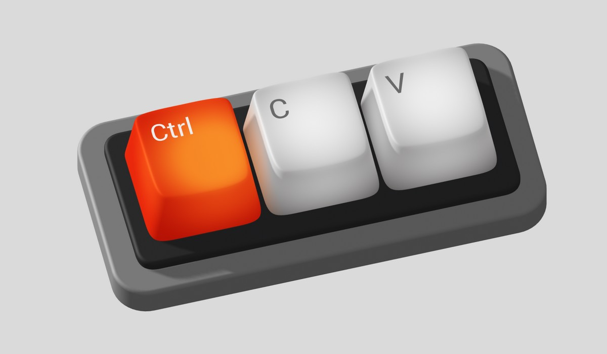
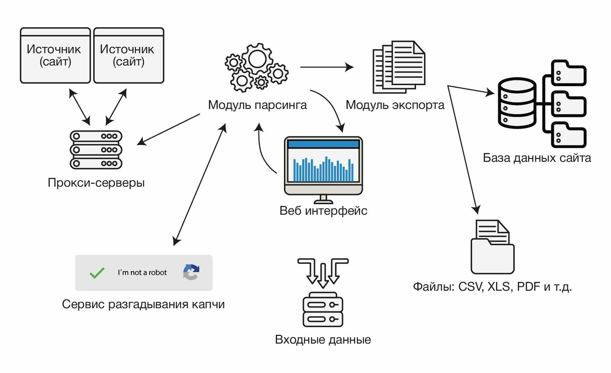

Методы парсинга
Ручной и консольный парсинг
Этими методами пользуются, когда либо не умеют пользоваться другими методами, либо не хотят тратить время на разработку и/или настройку парсерского по.
Суть метода проста: при помощи браузера открывается сайт и копируется его содержимое.
Отличие консольного и ручного парсига состоит в том что для консольного метода используются запросы в консоли.

Суть метода проста: при помощи браузера открывается сайт и копируется его содержимое.
Отличие консольного и ручного парсига состоит в том что для консольного метода используются запросы в консоли.
Статический парсинг
Самый распространенный метод парсинга, подходит для сайтов которые сразу загружают все данные на одной странице.
Парсер делает запрос на сервер, получает html код страницы и вытаскивает из него контент.

Парсер делает запрос на сервер, получает html код страницы и вытаскивает из него контент.
Динамический парсинг
Более продвинутый метод парсинга.
При таком парсинге исполняется javascrypt, что позволяет просматривать данные подгружаемые после загрузки основной страницы.
При таком парсинге исполняется javascrypt, что позволяет просматривать данные подгружаемые после загрузки основной страницы.
Парсинг при помощи Api
Данный метод производится предусмотренными разработчиками интернет ресурса инструментами.
Иногда этим методом не пользуются даже при его наличии т.к. доступ к API может быть платным или с недостаточным функционалом.
В некоторых случаях даже разработчик сайта парсит свой собственный сайт не пользуясь API (Например HH.ru).
Иногда этим методом не пользуются даже при его наличии т.к. доступ к API может быть платным или с недостаточным функционалом.
В некоторых случаях даже разработчик сайта парсит свой собственный сайт не пользуясь API (Например HH.ru).